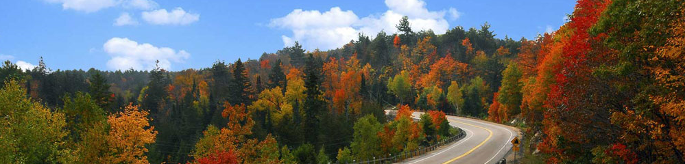

L'automne !18 octobre 2016
L'automne au Québec est splendide et unique au monde.
J'adore cette époque au Canada !
Des couleurs éclatantes
Du rouge, de l'orange, du jaune, et du vert mélangés, partout. Les couleurs sont éclatantes, virent au fluo, comme nulle part ailleurs au monde !
Les arbres qui donnent de telles teintes sont les érables. Le climat y joue un rôle très important également.
Après une période de froid, voire de gelées la nuit, l'été indien surgit pour quelques jours, et fait remonter la sève, ce qui donnerait ses couleurs éclatantes.
Mont Tremblant
Des amis français, Ben Caro et leur fille, étaient au Québec pour du tourisme, on a passé quelques jours ensemble.
Nous sommes allés au parc national du Mont Tremblant le week-end dernier pour 3 jours, et avons loué un super chalet.
Mais l'automne était en plein déclin là-bas, il était parfait une semaine avant, nous a t-on dit.
Beaucoup de feuilles étaient tombées, et les couleurs tiraient beaucoup vers le jaune. Mais c'était tout de même magnifique, ce parc est grandiose, avec des lacs et des rivières partout !
Bon j'ai triché, la photo ci-contre date d'une autre année :)
Retour à Montréal
Par la suite, nous sommes rentrés à Montréal avec mes amis, et avons profité ensemble quelques jours avant leur retour. Je vous laisse deviner ce que nous avons mangé :)
J'ai commencé à travailler lundi dernier : à suivre dans la prochaine newsletter !
... Le saviez-vous ?
- Au Québec, vous ne parlerez probablement pas des "gosses" en parlant des enfants. La signification est tout autre !
- Sur les boites aux lettres, on y voit souvent écrit "pas de circulaires"
- Le matin on déjeune, le midi on dîne, et le soir on soupe !
- On ne dit pas faire du shopping, mais magasiner
- On ne va pas chez l'épicier, mais chez le dépanneur. C'est également là qu'on y achète les cigarettes.
- Les "bibittes" ne sont pas ce que vous imaginez, mais en fait les petites bestioles, les insectes
- Les foufounes sont quant à elles les fesses